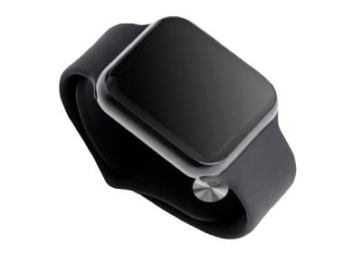
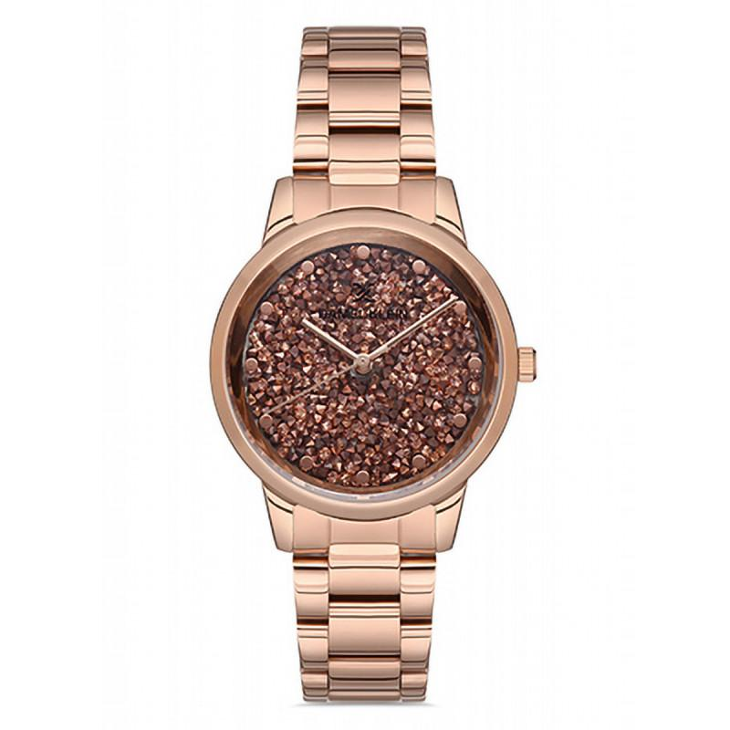
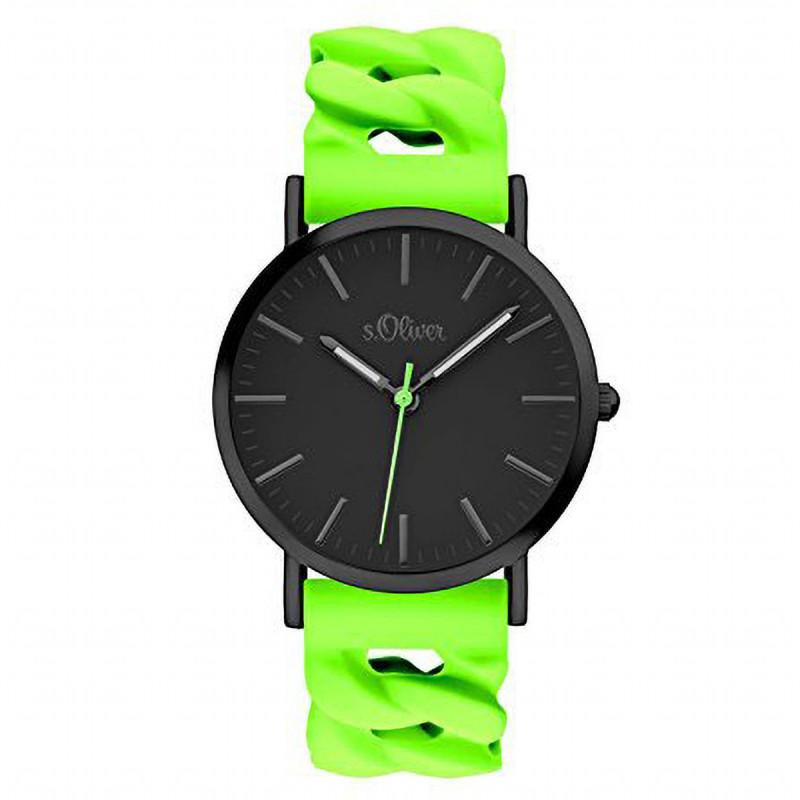
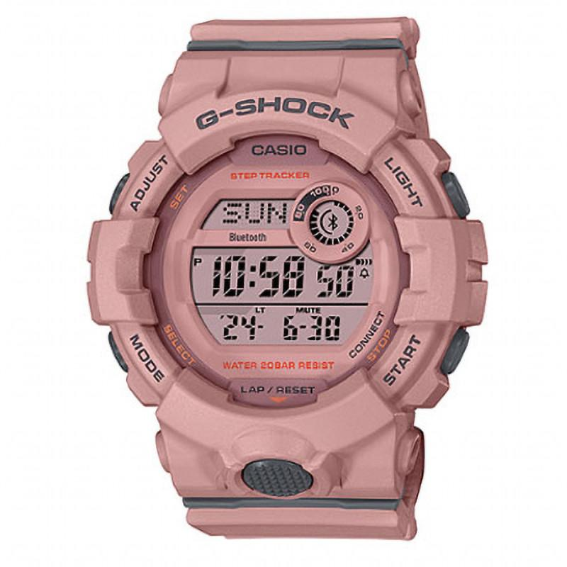
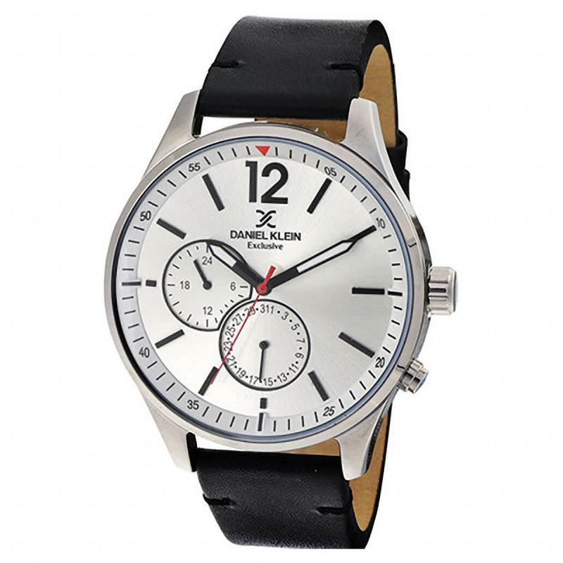

Širok spektar ručnih satova
Često se postavljaju pitanja kod kupaca što se tiče izbora ručnih satova koji je to sat koji moze da kao aksesoar upotpuni njihov stilski izražaj, od mehanizma za koji se treba opredeliti, do toga kolika treba da bude veličina kućišta, kakav brojčanik je bitan itd. Mi Vam pružamo širok izbor ručnih satova i sigurni smo da ćete naći onaj koji je baš po vašoj meri, uz naravno najbolji odnos cene i kvaliteta.

Iz ponude izdvajamo

Dostupno odmah
Daniel Klein DK12844-2
5.250,00 rsd

Dostupno odmah
S.Oliver SO-3291-PQ
2.900,00 rsd

Dostupno odmah
G-Shock GMD
12.570,00 rsd

Trenutno nedostupno
Daniel Klein DK11501-6
5.600,00 rsd